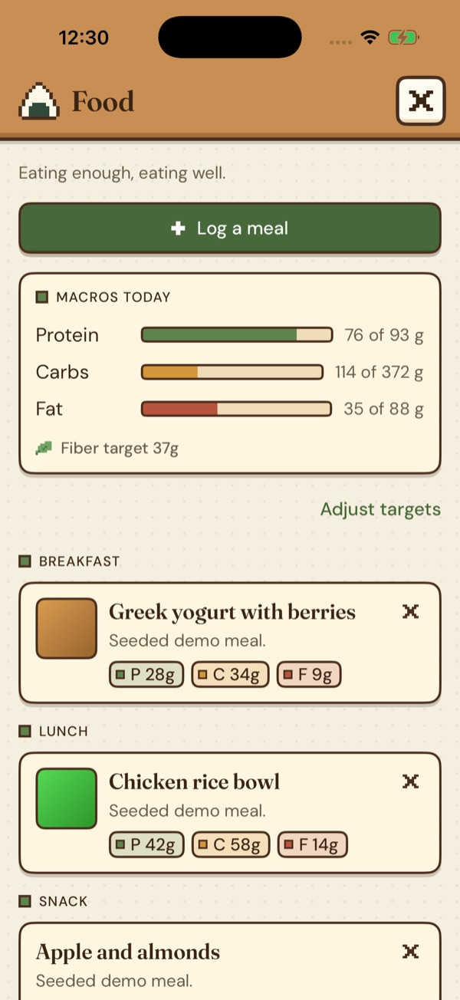
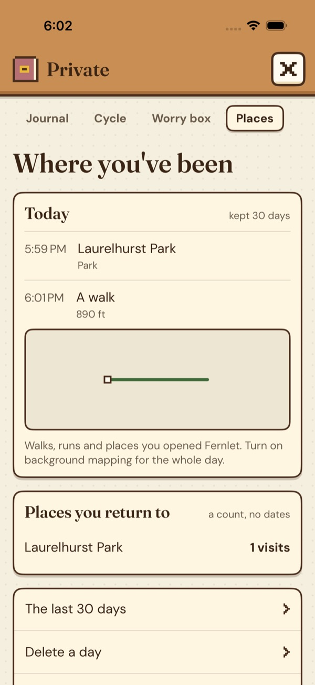
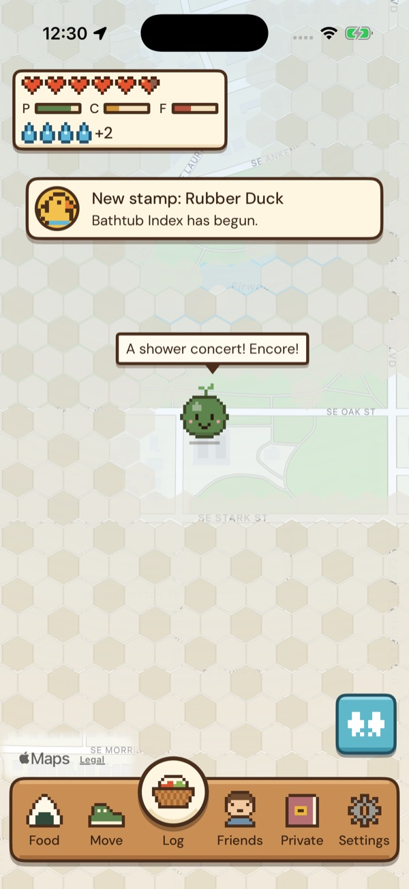
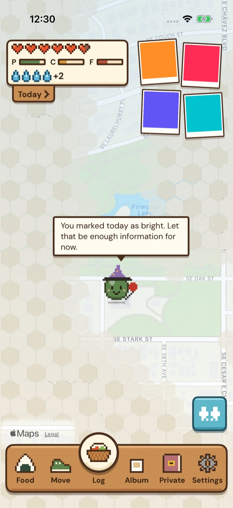
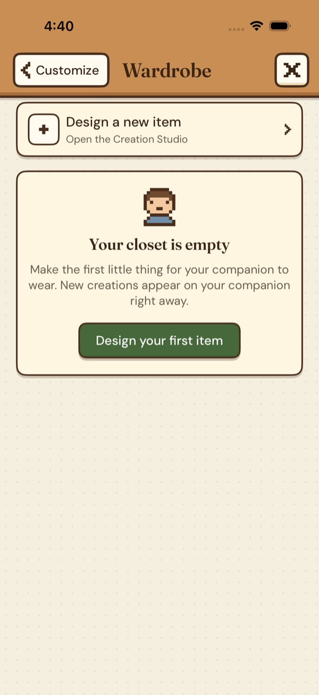

A tamagotchi
of yourself.
Fernlet is a small companion for everyday care. It lives on a map of your world that uncovers as you go, and it reflects the food, sleep, movement, rest, and other things you choose to log — without turning your life into a grade.
No streaks. No ads. No tracking. No account. Your health information stays yours.

Slept a little better last night.
What Fernlet leaves out
Fernlet is made to support your care, not keep you performing for an app. Each of these was possible, and left out on purpose.
- Streaks
- Calorie targets
- Weight goals
- Leaderboards
- Ads and tracking
- Accounts and logins




The companion is your biggest supporter.
Fernlet notices how you've been doing lately — thriving, okay, tired, resting, or sick — and meets you there. It doesn't keep a scoreboard, and it won't punish you for a rough week.
Your day moves with you
Fernlet uses a rolling 24-hour window instead of a calendar day, so care still counts when the clock changes.
How your day is going, at a glance
Six hearts on the map show how your day is going, and Today puts your care score beside them. Protein, carbs and fat fill like little bars, and water drops count your bottles of water. A lower day is just a lower day, never a broken streak.
Everything is one tap from the map
The item bar along the bottom opens Food, Move, Log, Album, Private and Settings as full-screen paper panels. The blue Quick start button shows what you can start where you are: a walk or a run, today's workout at your gym, or your usual meal.
It notices more than it lectures
Fernlet might mention that you slept a little better. It won't lecture you about what you skipped.
More gentle on hard days
If you're sick or having a difficult time, Fernlet responds with more room and less pressure.
A map of your world that uncovers as you go.
Home is a live map, with your companion standing where you are. Everywhere you haven't been yet is wild meadow — long grass, wildflowers, ponds and trees — and it clears a little at a time as you go.


Nature fog
The map is kept as patches about 35 m across. Clearing one has a short animation and the grass sways gently; with Reduce Motion on, it simply fades.
Where you've been
In Private, a 30-day timeline of the everyday places you stopped at: food and drink, gyms, parks, beaches and campgrounds. Places like doctors' offices, lawyers or therapists are never named or kept, unless you add one yourself.
Places you return to
The places you keep coming back to, with a visit count and never dates.
Homes and a hotel
Mark up to two homes and a hotel you're staying at. The map uncovers around them, and your companion welcomes you back.
Walk or run together
Start one from the blue button and your companion comes along. While “Save new routes” is on, the line is kept on your map, and it's logged as a walk or a run from its pace.
Your photos on the map
A photo you take on your own at one of those everyday places sits on the map where you took it, and you can put others there yourself. Only your own photos are ever on your map — never your friends'.
All of your map — the patches you've uncovered, your routes, places, homes and photo places — is encrypted on this iPhone only: never synced, backed up, exported, shared, given to the AI or sent to us. Apple Maps draws the map and receives only the area on your screen, never your history or your walks. Fernlet uses location in the background only during a walk you started, or if you turn on background mapping, which notes the places you stop at and, while you're driving, the road you take. Delete a day, a photo or all of it at any time, in Settings → Home map.
Little things to find along the way.
Every screen is drawn in pixels, and there are small surprises tucked in. They're there to make you smile, not to keep score.

Silly-stat stamps
Fernlet keeps an eye out for funny little milestones in what you log. The first time one shows up, you get a stamp for it, and every stamp you've found waits in your stamp book.

The photo strip and Album
Four photos from your time with friends sit in a little strip on Home; tap one to open it. Album, which used to be called Friends, keeps every photo, along with the friends you've made in person. Friends' photos stay there and never go on your map.

The wardrobe and Creation Studio
Dress your companion from the pixel wardrobe — a sprout, a flower, glasses, a scarf, a cap — or draw your own pieces in the Creation Studio, on a 24 × 24 pixel canvas.
Gold hearts
When a friend gives you a heart in person, it becomes a gold heart for 12 hours. You can hold two at a time, and each one adds half a heart to today's hearts. The day you've already saved never changes.
A workout planner that starts from your day.
Fernlet plans each session from your split, the equipment where you train, and the muscles and movements you've asked it to avoid. It looks at how you've been lately before suggesting how hard to go, and it learns your weights from what you actually lift. All of it is worked out on your iPhone.
One session, start to finish
Stretch about 8 min
A warm-up flow, walked as timed stretches of 20 to 30 seconds. Each one counts down and moves on by itself.
Activate
Light core work and a single-leg balance hold, kept easy so you start lifting fresh.
Lift
Today's lifts from your split, each with a weight range drawn from your own history.
Cardio
When the day includes some.
Cool down
Up to four longer stretches, 45 seconds each, picked for the muscles you just worked.
You can skip the warm-up or the cool-down whenever you'd rather.
Planned for where you are
Each place you train keeps its own equipment list, so a session only uses what's there. Exercises that work the muscles or movements you've asked to avoid are left out, and a slot nothing fits is dropped, with a note that says so.
Your split comes round in turn
The next session follows the last one you logged, not the day of the week, so a missed day doesn't skip part of your split.
How hard today should be
Light, Moderate or Hard starts on a suggestion from your last few days of training, energy and meals, plus resting heart rate, heart-rate variability and sleep if you share them from Apple Health. You can always pick another. If you've marked yourself unwell, there's no session to push through, just gentle stretching or an easy walk, there only if moving would feel good.
Weights from your own lifting
The first time you do a lift, you choose the weight. After that, Fernlet suggests one from your recent sessions, as a range that narrows as it learns:
- After one session±10%
- After two±5%
- Three that agreeone step
the suggested weight, already picked for you
- Finish a lift without touching anything and it's logged as done at that weight. Only a set that went differently needs editing.
- An optional Easy, Good or Tough tap on the last set helps it judge next time. No tap counts as Good.
- If you keep choosing weights outside the range, it may ask why, now and then. Answer that it hurt, and it holds that lift steady and suggests trying a different exercise or checking with a professional.
A monthly strength check
About every four weeks, on a day that isn't light, one lift builds up over a few lighter sets to a single test set, stopped with a rep or two left. Intermediate and advanced lifters can choose to test a true max instead, after a safety confirmation.
When a lift stalls
Fernlet only calls it a plateau when you've been training a lift steadily and your last four sessions haven't beaten your earlier best. Plateaus are normal, and the response starts with rest:
Rest first
It looks at your sleep and protein over the past two weeks and mentions either one if it ran low. The next session is easier, with half the sets and about 10% less weight, or you can take an extra rest day instead.
Recover
Your usual weight, with more rest between sets and the lift moved to the start of the session.
Support work
For the next four sessions, one accessory slot works the muscles that help that lift.
A variation
If it's still stuck, a variation stands in for four weeks, and then you're back on the lift.
A new best ends it at any step.
Adjust with AI, if you want to
Type what you'd like changed and Apple's on-device model reworks the lifting part of the session. It can only choose from exercises that already passed the equipment and avoid-list check.
The planner, the guided workout and Adjust with AI make no network requests. Your workouts stay on your phone, in your own iCloud if you turned on sync, and in Apple Health if you allowed it. They go anywhere else only when you send them.
Friends begin in person.
There is no public profile, discovery feed, or stranger requests. If two people choose to connect while they're together, two phones hold still 15 cm apart for the better part of a second — that's the handshake — and everything after that passes directly between their phones.
Three phones in one room. Nothing is connected, nothing is advertising.
Stand next to each other
Both of you tap Join. The phones find each other over a local, encrypted peer-to-peer link — no internet, no lobby to browse.
Touch phones and hold
Precise ranging measures the real distance. A friend is only committed after 15 cm for about 0.8 seconds. Phones never brought that close never connect.
No accounts involved
You exchange display names, public keys, companion looks and a fuzzy vibe. Your private keys never leave your device.
It fades when you leave
A session only lives while you're together — send recipes, companion decorations, and hearts back and forth, and support a friend by sending one when you think they need it. A heart given in person becomes a gold heart for 12 hours. There's nothing left on a server once you go.
Friends see a name, a companion, and a broad wellbeing state — thriving, okay, struggling. They don't see your health records, score, goals, journal, cycle data or your map, and sharing ends when the connection ends. Your friends live in Album, and the list stays small on purpose: 8 friends and 4 best friends.
Your cycle data stays separate.
Cycle tracking is kept apart from Fernlet's everyday features. It's not shared with friends, used for the companion, or included in ordinary iCloud sync — and you can choose whether to make a separate encrypted backup. That separation lives in the source code itself: wiring cycle tracking into the AI or networking code by accident breaks the build immediately.
Your period might be starting soon.
predicted on your phone — the prediction never leaves it either
Cycle data never leaves the phone unless you deliberately turn this on — a separate, clearly-warned opt-in, not part of ordinary iCloud sync.
Never touches the AI
On-device models cannot import the sealed store. No summaries, no suggestions, no reflections built from your cycle.
Your notes never go to Apple Health
Flow, temperature and the like reach Apple Health only while you share cycle tracking with Health. Your cycle notes, mood, journal, hydration and hygiene never do.
Never in ordinary sync
It is excluded from iCloud sync and from your data export, so a shared laptop or a file you send someone can't carry it out with everything else.
Never visible to friends
In-person friends see a fuzzy vibe and a companion. There is no field in the handshake that could carry cycle information.
The wall breaks the build
A pre-merge script fails the build the moment the AI or networking code imports the sealed store — a compiler check that runs before every merge.
Intimate-activity notes sit in the same sealed store. Intimacy tracking is only for people who confirm they're 16 or older; it's on for them by default, onboarding offers to turn it off, and hiding it never deletes anything.
Privacy shouldn't depend on a promise.
Fernlet has no ads, no trackers, and no developer-run server holding your health information. The app works without an account. Your everyday information stays on your phone; if you choose iCloud sync, it goes to your own private iCloud database, not one Fernlet operates. Sensitive information — journal text, cycle data, and similar notes — is kept separately and encrypted. Your map is kept apart again: encrypted on this iPhone only, never synced, backed up, exported, shared, given to the AI or sent to us.
Period data, journal text and intimate notes live in a sealed, encrypted store the AI and networking code physically cannot import — a build script turns any cross-wall import into a hard compile error.
Nothing above this line is ours. Optional backup goes to your own iCloud, sealed categories encrypted first. Your map history never leaves this iPhone.
servers the developer operates. No backend means no copy of you to leak.
iCloud, not ours — and sealed categories are encrypted before they leave the phone.
AI. Journal text, memories, health, photos and cycle data are never sent to an AI service.
commitments: data logged under this policy can never be retroactively repurposed.
Questions people actually ask
Is it free?
Yes, permanently — no price, no subscription, no in-app purchases, no ads. There is no business model that needs your data, because there is no business model that touches your data. Fernlet is also open source under Apache 2.0: every line, including the cryptography, is published at github.com/bowman-mw/fernlet, so you don’t have to take any of this on trust.
Do I need an account?
No. There is no sign-up, no login, no email, no password. The app works the moment you open it.
What happens if I miss a day?
That day scores lower. That is all. There are no streaks to break, and every unlock you have earned is cumulative and can never be taken back.
Does it count calories?
Never. You get macro goals — protein, carbs, fat — and nothing else. No calorie ring, no weight target, no body-composition anything.
Can my friends see my numbers?
No. Friends exchange display names, companion appearances and a fuzzy vibe — thriving, okay, struggling. Your score, goals, cycle data and raw health data never leave your phone, and friends never see your map, your places or your walks.
Does Fernlet track where I go?
Only if you let it, and only for you. Location is optional. With it, Fernlet places your companion on the map and uncovers the map as you go. What it keeps — the patches you've uncovered, the routes you choose to save, the everyday places you stopped at — is encrypted on this iPhone only: never synced, backed up, exported, shared, given to the AI or sent to us. It uses location in the background only during a walk you started, or if you turn on background mapping, which notes the places you stop at and, while you're driving, the road you take. Apple Maps draws the map and receives only the area on your screen.
What if I lose my phone?
If you turned on iCloud sync, your core data restores from your own iCloud. Sealed categories — cycle data, journal text, intimate logs, your own photos — work differently: their key is locked to this phone's Secure Enclave, so no device backup can bring them back on a new phone. The only way to recover them is the optional encrypted sealed backup, which uses a key stored in your iCloud Keychain. If you lose access to that Keychain everywhere, that data is gone for good — the app tells you this before you turn the backup on. Your map, places and routes are never backed up at all, so a new phone starts a fresh map.
Which iPhones does it need?
iOS 26 or later; iPhone 15 Pro or newer for the full on-device AI features. The 15 cm friend handshake needs a phone with precise ranging — on other phones you confirm on screen instead.
The plan, roughly
Built by one person, in the open. Most of this list has turned into real features already — what's left keeps the same rule: nothing here changes the privacy commitments.
- Fernlet World: Home as a live pixel map, nature fog, places, stamps and a pixel wardrobe
- Meal logging overhaul + barcode scanning against a real food database
- Cooking mode with Live Activities
- Disposable-camera photowall + friend-mesh photo sharing
- Creation Studio clothing sharing
- Widgets, including a map widget, and lock-screen glances
- Sealed-backup recovery and trainer session exports
- Guided workouts with weights from your own history
- In-workout cues, timed cardio with heart-rate zones, mobility flows and how-to text
- Full localization — translated strings, not just scaffolding
- Multi-device sync without iCloud
- Car and bike detection
- “Remember this place”, anywhere on the map
- With the iOS 27 update: an Apple Watch companion and a layout for iPhone Duo
- Exercise demonstrations
- Group workouts and shared sessions
Look at the code yourself.
Fernlet's source code, privacy policy, and technical documentation are public, including the network-egress inventory. Point a proxy at the app and check that the list is the whole list.